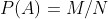
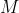
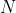
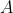
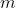
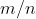

足够大，频率作为未知概率
足够大，频率作为未知概率  的估计，就有足够好的近似程度。因此，我们不妨把这看作一个概率的实用定义，而回避在理论上如何定义概率这个问题。
的估计，就有足够好的近似程度。因此，我们不妨把这看作一个概率的实用定义，而回避在理论上如何定义概率这个问题。1.3 统计概率——频率
假定给你一个形状方正但质地不均匀的骰子，比如说靠近 1 点的这一边重一些，则在投掷时，这面落地的机会较大，因而 1 点对面的点出现的机会要大一些，其余各点出现的机会都受到影响。我们直观上能相信，投掷时各点出现的机会（即概率）都有一个定数，但即使你完全了解骰子中每一点处的密度，也无法用一种大家都能认可的方法，把各点出现的概率计算出来。
要指出的是，上文说直观上相信各点出现的概率有定数，实际上只是一种模糊的想象。因为，何谓概率，在此处的问题中说不清。在古典概率中这一点已解决，因为据“同等可能”的前提，已引入了大家都能认可的规定

，其中
、
并非抽象概念而是可以认知的。此处则不然，比如说，“掷出 6 点的概率”，不知道该怎样去定义它。于是我们想到伯努利的大数定律。既然在“盒中抽球”的场合在理论上能肯定频率接近概率，而且观察也证明了“在很大次数的观察中频率愈来愈保持稳定”，故有理由期望，这一点对像投掷一个非均匀骰子的情况仍能成立，而这在一定程度上可诉诸试验。这个考虑给了我们一种定义概率的方法。设有一个事件

，它可以在相同条件下重复进行观察，原则上愿意重复多少次都可以。如在掷非均匀骰子中的事件 “掷出 6 点”，就是这样一个情况。我们反复地进行观察。设观察了 次而事件 出现了 
次，
称为事件 的频率。我们相信，当 愈来愈大时，频率 虽有些摆动，但幅度愈来愈小而最终会“趋近”于某一介于 0 与 1 之间的值 ，我们就把这个 定义为事件 的概率。在这个定义中，无须有“同等可能”的条件，但要求该事件可以在同样条件下重复观察，这是一个关键。用这种方式定义的概率叫作“统计概率”，因为它是通过“统计”（即进行观察）去定义概率的。德国概率论学者冯·米塞斯是其热心的支持者。他花了很多精力研究这个问题，力图为它发展出一套在逻辑上说得通的理论体系。1919 年他发表了一部著作，介绍了他的研究结果。然而，他的这个努力，从理论的角度看，并没有成功。困难集中在一点上：不进行无限次观察，就无法完全肯定频率的稳定性。虽则如上所说，我们根据经验和盒子模型下的伯努利大数定律，可以相信这一点，但“相信”不能代替严格的证明，因而不能作为一种理论的出发点。既然做无限次观察为不可能，其余一切就谈不上了。
虽然如此，从实用的角度看，概率的统计定义有重大的意义，在于它虽则不能（像古典概率定义那样）确切地定义出概率，但给出了一个通过实地观察或试验去估计概率的方法。且我们知道，只要观察或试验数目 足够大，频率作为未知概率 的估计，就有足够好的近似程度。因此，我们不妨把这看作一个概率的实用定义，而回避在理论上如何定义概率这个问题。
我们再提醒读者注意下述重要之点。在古典概率的场合，事件概率有一个不依赖于频率的定义——它根本不用诉诸试验，这样才有一个频率与概率是否接近的问题，对这个问题的研究导致了伯努利大数定律。在统计定义的场合，这是一个悖论。你如不从承认大数定律出发，概率就无法定义，因而谈不上频率与概率接近的问题。但如你承认大数定律，以便可以定义概率，那大数定律就是你的前提，而不再是一个需要证明的论断了。
那么，是不是可以说，大数定律是一个只与古典概率有关的结果呢？回答是否定的。事实上，从现实中观察到的频率稳定性的事实，并不只限于古典概率可用的场合，这使人们相信它确是一个普遍规律。这是从实用角度讲，现在要说的是，从数学理论的角度讲，这也成立，当然得有一些前提，这个前提就是概率的公理化。
数学推理是演绎性的。已被证明确立的结论，可以用来证明进一步的结论，这就是数学推导。这是数学与实际学科，如物理、化学、生物学等的一个根本不同之点。这些学科虽也用到理论性的推导，但一个结果的确立，需要实证——通过试验、观察的验证。数学的推理只要求合乎逻辑，没有实证的问题。但是，数学推理既然是基于已证的结论，而后者又要基于其他已证的结论，溯本寻源，作为最初的出发点，总有若干论断是无法证明的。这些都是一些简单且看上去合理、为大家公认的事实，在数学上就称为所谓公理。
在中学学过平面几何的人，不难理解这一点。在平面几何中，像“过两点有一条且只有一条直线”“过直线外一点有一条且只有一条与此直线平行的直线”等，就是作为不加证明而接受的公理。这种公理共有几十条，在其基础上，用演绎的方法推导出整部平面几何的内容。
在 1933 年，苏联数学家柯尔莫哥洛夫把这种公理化的思想用到了概率上。从几条简单的公理出发，推导出其他内容。这些公理中有一条，是把事件概率的存在作为一个不需要证明的事实接受下来。在这个公理体系之下，大数定律就成为一个需要证明且可以得到证明的论断，而伯努利的证明也仍然适用。对这个问题的详细讨论，超出了本书的范围，只好就此打住。然而，需要强调的是，柯氏公理体系中关于“概率存在”的规定有其实际背景，那就是概率的古典定义和统计定义。